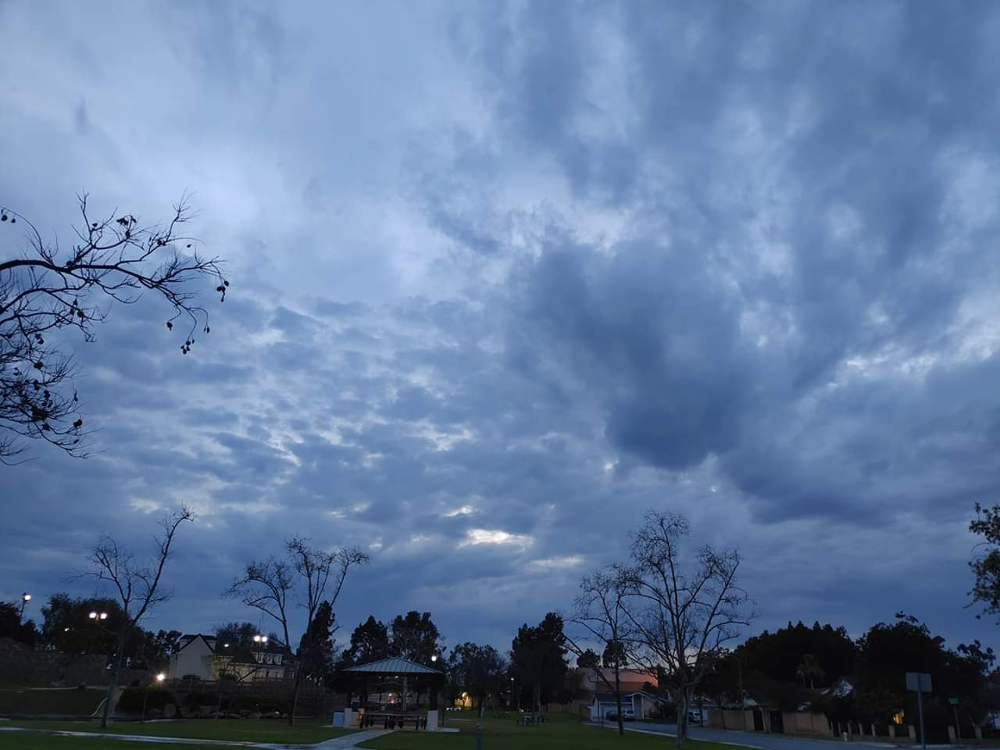
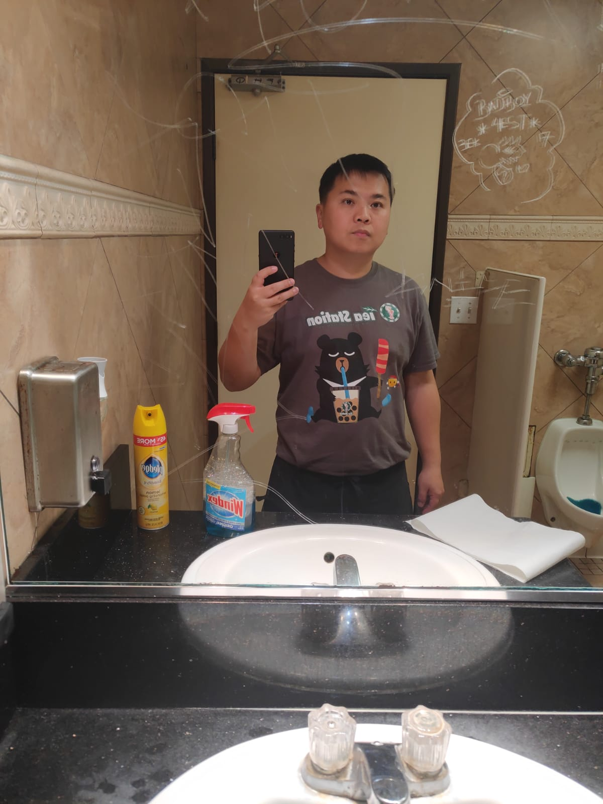
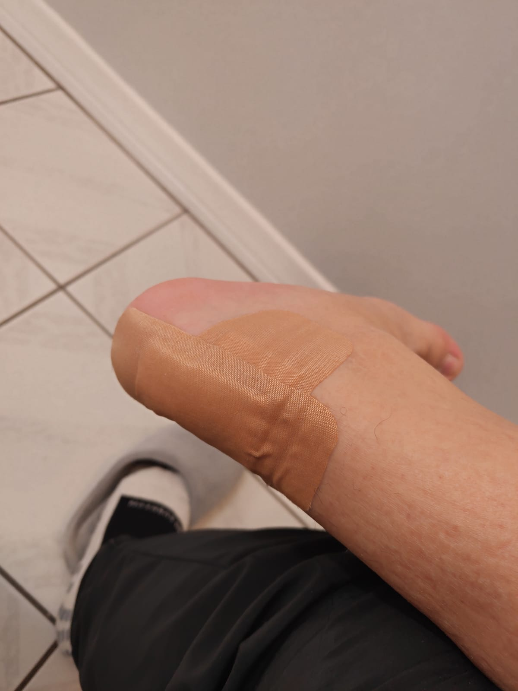
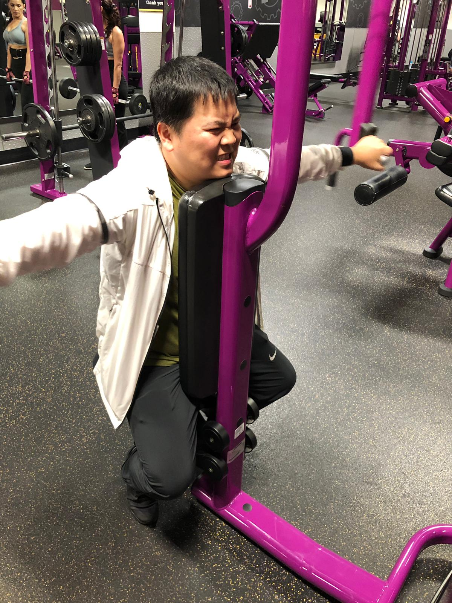
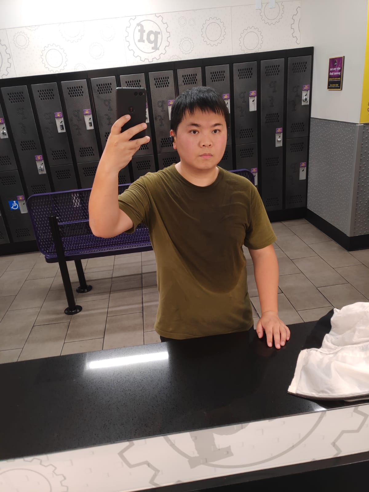
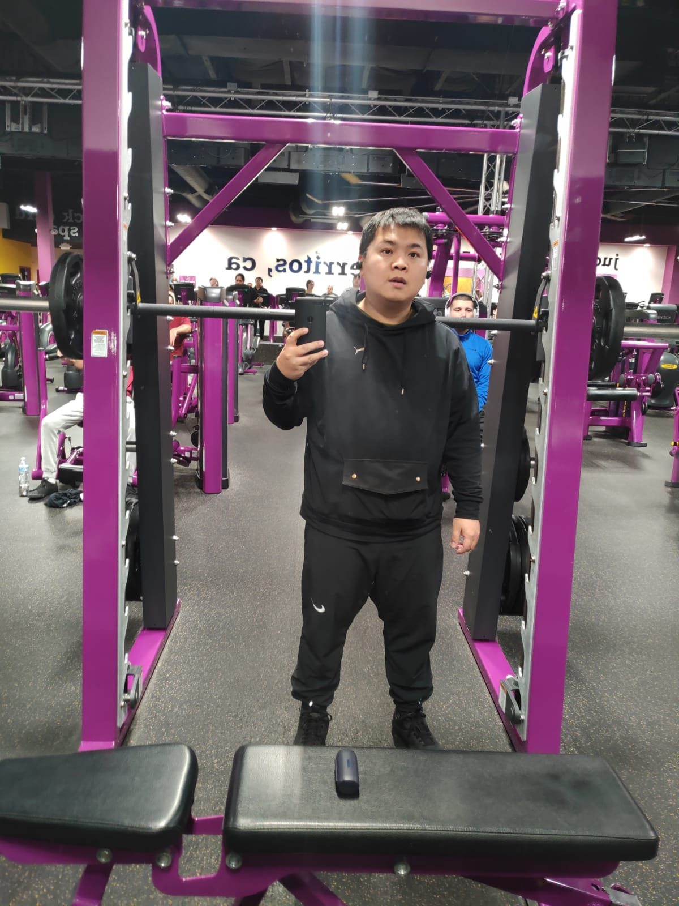
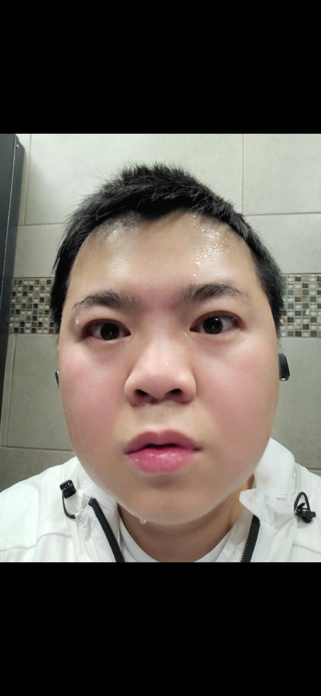

Hi and welcome to my page. I created this page because I wanted to share the journey that I have had in the past couple of weeks with running. All the goods, bad, and everything in between on how it has changed my life.
Disclaimer I am not a professional athlete, please do not do everything that I say am doing,
I am not held responsible for the actions you take after reading my post.
Thank you and enjoy the ride
To make sure that my day was going to be as smooth as possible, I bought a pair of running shoes the night before and jumped in them for 30 minutes to break them in.
Alright, time to make the run that I have longed for since last month. As I run down South St I quickly realized that I have not ran in the several months that have passed. Every 10 minutes I am forced
to sit on the curb as cars pass judging me. No matter, at the end of the day it'll be worth it. As I pick my self up I thought about what a difference I am making in my life and what an impact it will have
as I move forward. One hour and fority five minutes later I am home; drenched in success I decided to take a picture that will commemorate today.


I honestly thought running was going to be my habit from yesterday going forward. However, due to some complications of not running for many moons. I have massive blisters all over my feet. I dont believe I will be continuing with my journey anymore. I bought some bandages last night to wrap my feet;
just incase my shoes rub my feet raw again. As I get out of my executive chair at work, I thought to myself; Should I even bother running back home tonight? I don't know if it is worth the effort anymore. Maybe I should just go to the gym like any regular joe, I don't need to run. Today, I worked out at the gym, but
because I was not able to stick to my commitment of running everyday. I decided to do a full body workout to make sure I punish myself. Thank you all for your support, this will be my final post as well.




